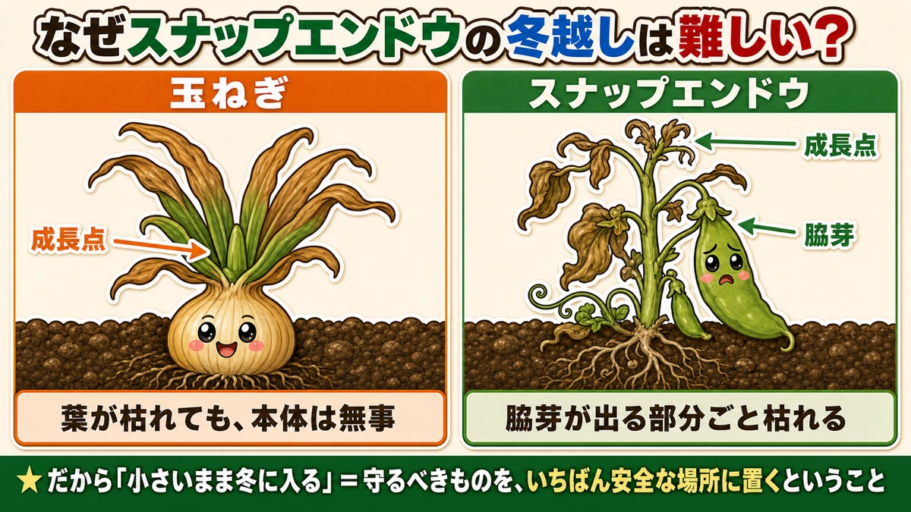
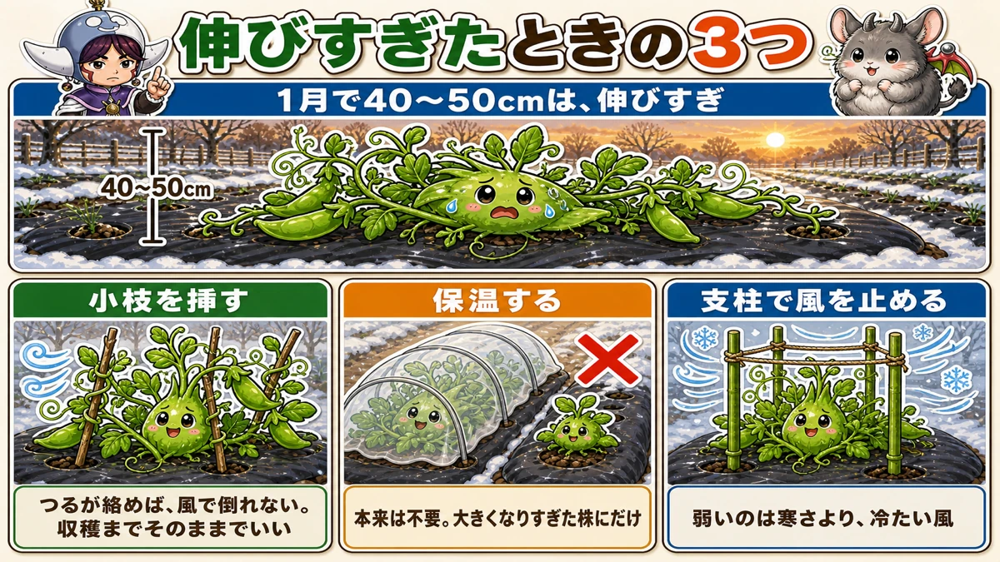
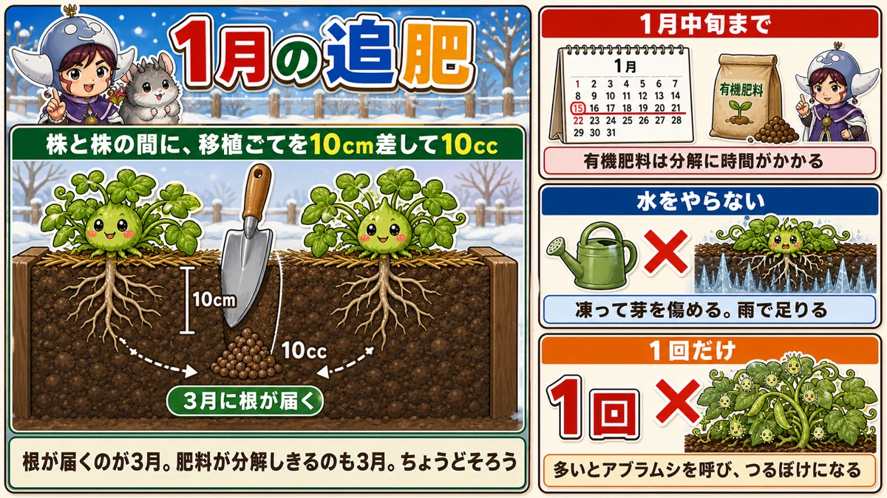
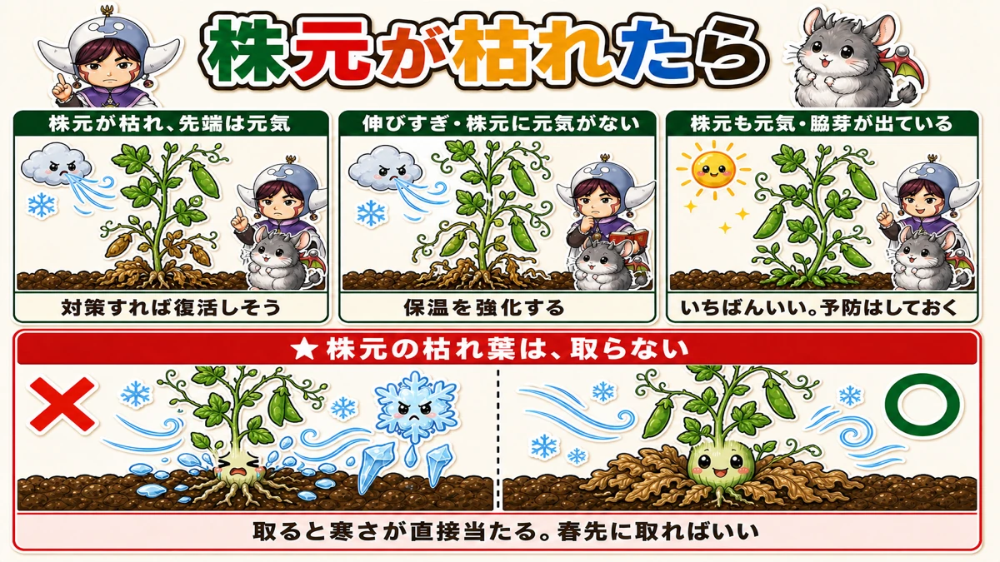
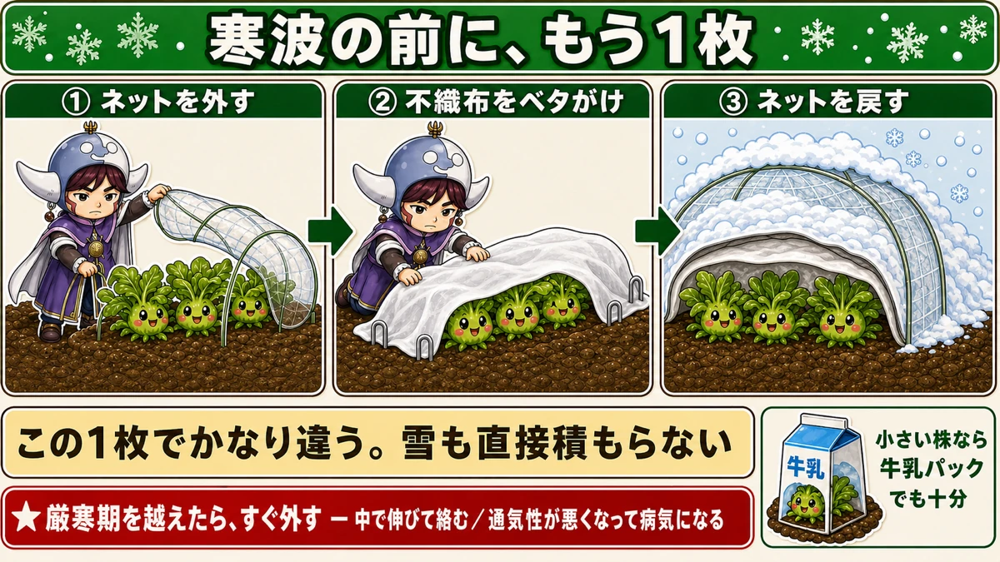

枯れても抜かないでください スナップエンドウの1月の乗り切り方
🗨️「暖冬で伸びすぎた。このままで大丈夫？」
🗨️「株元が枯れてきた。もうダメかな」
🗨️「1月って、何をしてあげればいいの？」
どうも、8150（えいこう）です🌱 家庭菜園歴8年、理科の教員免許を持っていて、有機・無農薬で野菜を育てています。
今回は、1月から2月にかけてのスナップエンドウとそら豆の話です。
先に、この記事でいちばん言いたいことを言っておきますね。
枯れてきても、抜かないでください。
冬のスナップエンドウは、見た目がどんどん悪くなります。下の葉が茶色くなって、株元がしおれて、「これは失敗したな」と思う。
でも、そこで抜くのが早すぎるんです。
そしてもうひとつ。この野菜は、秋に植えるものの中でいちばん冬越しが難しい。それには、はっきりした理由があります☺️
📖 この記事の目次
なぜ、この野菜だけ難しいのか

同じ時期に植える野菜と比べてみます。
玉ねぎ、にんにく、いちご。この3つに比べて、★スナップエンドウは寒さに弱いです。
でも、弱いだけなら防寒すればいい。本当の問題は、失敗したときの取り返しがきかないことです。
玉ねぎは、葉が枯れても平気
玉ねぎは、葉が寒さでやられても大丈夫です。
★成長点が、地際にあるからです。
球のすぐ上、地面すれすれのところに次の葉を作る場所がある。だから上の葉が枯れても、本体は無事。春になればまた出てきます。
スナップエンドウは、そこが上にある
ところがスナップエンドウは違います。
★成長点も、脇芽が出る部分も、茎の上のほうにあります。
つまり茎が枯れると、次に伸びるはずだった芽も、一緒に失われる。
★「脇芽が出る部分を含めて枯れる」
これがこの野菜の怖いところです。玉ねぎのようなリカバリーが、そのままでは効かない。
だから「小さいまま冬に入る」ことが大事なんですね。小さければ、成長点が地面の近くにある。地面のそばは風が弱く、土の熱もあって暖かい。★守るべきものを、いちばん安全な場所に置いておくということです。
★伸びすぎてしまった人へ ー 応急処置3つ

暖冬の年は、1月の時点で40〜50cmになることがあります。私の畑でもありました。
このままだと、★伸びた部分は寒害で枯れます。全滅はしませんが、そのまま放っておくのはもったいない。
打てる手が3つあります。
①小枝を、株の周りに挿す
これがいちばん手軽で、効きます。
つるあり品種は、絡むものがないとどうなるか。★マルチの上にペタッと倒れます。倒れた株は生育が落ちます。
そこで、★小枝や笹を株の周りに挿して、つるを絡ませてあげてください。
ローズマリーの枝でも構いません。要するに、つるが巻きつける「取っかかり」があればいいんです。
★狙いは、風の強い日に地べたへ倒れ込むのを防ぐこと。
一度絡んでしまえば、★収穫までそのままで大丈夫です。あとから抜く必要はありません。
②保温する
本来、この時期にトンネルは設置しません。寒さに当てないと花が咲かないからです。
でも、★大きくなりすぎている株は例外です。
かなりしっかり保温しないと、冬を越せません。★大きいものにだけ、あえてトンネルを設置する。これしか手がないんですね。
③支柱を立てて、風を止める
くり返しになりますが、この野菜が弱いのは寒さそのものより★冷たい風です。
支柱を立てて周りを囲うだけでも、生き残りが変わります。
摘心するかどうかは、正解がありません
「先端を摘んで、下から脇芽を出させたほうがいいのでは」という考え方もあります。
正直に書くと、★どちらがいいかは決着していません。
私が話を聞いたベテランの方も、「保温したほうがいいのか、摘心して下からの脇芽を育てたほうがいいのか、今年実験してみる」と言っていました。
なので、ここは断言しません。ただ、★どちらにしても「何もしないよりはいい」というのは確かです。
★1月の追肥 ー 3つの注意

冬にやる作業は、実はこれくらいです。でも、やり方を間違えると逆効果になります。
①1月中旬までに済ませる
★有機肥料は、微生物が分解してから効きます。時間がかかる。
だから1月中旬までには入れておいてください。★遅れると、さやが大きくなる時期に肥料が効きません。
（化学肥料なら、2月でも即効性があります）
②追肥のあと、水をやらない
これは意外に思われるかもしれません。
★厳寒期に水をやると、霜柱が立ちやすくなります。また、凍って芽を傷めることもある。
★この時期は雨がしっかり土に染み込むので、水やりはほぼ不要です。
③★追肥は、1回だけ
ここがいちばん大事です。
この時期は追肥をしても、目に見えて大きくなりません。だから「効いていないのかな」と思って、何度もやってしまう人がいる。
でも、それが逆効果になります。
- ★肥料が多いと、害虫を呼びます。アブラムシがつきやすくなる
- ★つるぼけになります。つるだけが大きく育って、実つきが悪くなる
1回だけ。これを守ってください。
量と、入れる場所
具体的に書いておきます。
- ★1か所あたり10cc
- ★株と株の間に、移植ごてを10cmほど差し込む
- 前後に少し押し広げて、そこに入れる
- 埋め戻して、しっかり押さえる
★この10ccは「1株ぶんの量」です。1株だけ育てているなら、左右に5ccずつ入れてください。4株なら4か所に10ccずつ。
★根はまだそこまで伸びていないので、傷つける心配はありません。
そして、ここが面白いところなんですが。
★根がこの場所に届くのが3月ごろ。有機肥料が分解しきるのも、ちょうどそのころ。
つまり★根の到達と、肥料が効き始めるタイミングが、ぴったりそろうんです。そして4月以降、花が咲いてさやがつく時期に使われる。
1月に入れる意味が、ここにあります。
★株元が枯れてきたら ー 3つの見分け方

1月後半が、冬越しのいちばん重要な時期です。ここを乗り越えれば、あとは春に向かうだけ。
畑に行って、株がどの状態か見てください。3つに分かれます。
①株元が枯れ始めているが、先端は元気
★対策をすれば復活しそうな状態です。あきらめないでください。
②伸びすぎていて、成長点は元気だが株元に元気がない
少し心配な状態。保温を強化してください。
③伸びているが株元も元気で、脇芽が出始めている
★いちばんいい状態です。ただし、これから寒さの被害に遭う可能性があるので、予防はしておきましょう。
★★株元の枯れ葉は、取らないでください
これが今回いちばんお伝えしたいことです。
株元が枯れると、その葉を摘み取りたくなりますよね。見た目も悪いし、病気になりそうな気がする。
でも、★取ると、寒さが直接当たるようになります。
枯れた葉は、株元にとって毛布のようなものなんです。汚らしく見えても、そこに置いておく。
★そのまま冬越しさせて、春先になってから取れば問題ありません。
元気なつるに、印をつけておく
もうひとつ、今のうちにやっておくといい作業があります。
★先端が黄色く変色しているつるは、冬越しに成功してもうまく育たない可能性が高いです。
でも、★長くなってくると、どれが元気なつるか分からなくなります。
そこで今のうちに、間引く予定のものに目星をつけておく。★株元まで指でたどって、何か印をつけておいてください。
そして2月中旬ごろに、その印の下のものを間引く。冬のうちに判断しておくと、春に迷いません。
枯れていても、防寒でしのぐ
株元が枯れてしまった株にも、まだ手があります。
- ★不織布を株元にかける
- ★わらなどで株元を囲うように挟み込む
- 背が高い場合はビニールトンネル
★ポイントは、「トンネル」と「株元の保温」を両方やることです。上からかぶせるだけでは、株元に寒さが当たり続けます。
そして正直に書いておくと、★復活しないこともあります。
なので、★ポット苗を今のうちから準備しておくと安心です。だめだったら植え替えられます。保険をかけておくのは、負けではありません。
寒波が来る前に、もう1枚

普段は防虫ネットで、風対策と軽い防寒をしている方が多いと思います。
でも、★強い寒波が予想されるときは、それだけでは足りません。
やり方
- 防虫ネットを一度外す
- ★不織布を上からベタがけする
- 風が強そうならUピンで留める
- ★その上から、防虫ネットを戻す
★この1枚があるだけで、かなり寒さがしのげます。
そして★雪が降るときも、上に防虫ネットがあれば直接積もりません。二重にする意味は、そこにもあります。
★外すのを忘れないでください
これ、大事な注意点です。
★1月2月の厳寒期を越えたら、すぐに外してください。
外さないとどうなるか。
- ★中で気温が上がって、どんどん成長してしまい、絡んでしまう
- ★通気性が悪くなって、病気になる
寒さをしのぐための道具が、暖かくなった途端に害になる。かけたら外す、をセットで覚えておいてください。
小さい株には、牛乳パックという手も
★10cm程度の小さい株なら、寒波の前に牛乳パックをかぶせるだけでも十分な効果があります。
防寒効果が高く、元気に育ちます。お金もかかりません。
★ただし大きくなると先端が枯れるリスクがあるので、そのときは別の対策に切り替えてください。
学ぶ：守るべき場所が、どこにあるか🔬
理科の時間です。この記事の全部が、ひとつの話につながります。
植物には「成長点」があります。次の葉や茎を作り出す、いわば工場の司令室です。
そして★この司令室がどこにあるかで、寒さへの強さが決まります。
地際にあるか、上にあるか
- 玉ねぎ、にんにく、ネギ … ★成長点が地際にある
- スナップエンドウ、そら豆 … ★成長点が茎の上のほうにある
地際は、いちばん安全な場所です。土は昼の熱をためていて、夜もゆっくり放します。風も当たりにくい。
一方、茎の上は無防備です。風がまともに当たるし、放射冷却で真っ先に冷える。
だから玉ねぎは葉が枯れても平気で、スナップエンドウは茎が枯れると次がない。★同じ「冬越し野菜」でも、守り方がまったく違うわけですね。
だから「小さいほうが強い」
ここで、秋に書いた話とつながります。
★小さい株は、成長点が地面の近くにあります。
大きく伸びた株は、司令室を高いところに掲げているのと同じ。目立つし、寒風にさらされる。
「小さいまま冬に入れる」というのは、★守るべきものを、安全な場所に置いておくということなんです。
なぜ厳寒期に水をやってはいけないのか
もうひとつ、水の話も同じ理屈で説明できます。
土に水が多いと、夜に凍って霜柱が立ちます。霜柱は株を持ち上げる。
それだけではありません。★根の周りの水が凍ると、氷の結晶が根を物理的に傷つけます。
水は凍ると体積が増えます。細胞のすぐそばで氷が育つと、押しつぶされたり、突き破られたりする。
★寒い時期の水やりが危険なのは、「冷たいから」ではなく「凍るから」なんですね。
お子さんと一緒なら
畑にある冬越し野菜を、★「成長点がどこにあるか」で分けてみてください。
玉ねぎ、にんにく、ネギ、いちご、スナップエンドウ、そら豆。
指で株元をたどって、「次の葉はどこから出てくる？」と探す。地面の近くから出ているものと、上のほうから出ているものに分かれます。
そして、★冬を越したあとにもう一度見る。どちらが元気だったかが、はっきり出ますよ
まとめ
ここまで読んでくださって、ありがとうございます！
スナップエンドウの冬は、耐える時間です。ポイントを整理しておきますね。
- ★この野菜は「脇芽が出る部分ごと枯れる」から難しい。玉ねぎは成長点が地際なので葉が枯れても平気
- 伸びすぎたら3つ ー 小枝を挿してつるを絡ませる／保温する／支柱で風を止める
- ★追肥は1月中旬まで、1か所10cc、1回だけ。多いとアブラムシを呼び、つるぼけになる
- ★追肥のあと水をやらない。凍って根を傷める
- ★★株元の枯れ葉は取らない。取ると寒さが直接当たる。春先に取ればいい
- 寒波の前に、防虫ネットの下へ不織布を1枚。★厳寒期を越えたら、すぐ外す
- ★復活しないこともある。ポット苗を保険に準備しておく
全部やろうとしなくて大丈夫です。まずは畑に行って、株元の枯れ葉を「取らずに」帰ってきてください。何もしないことが、いちばん効く日もあります
次回は、穫ったあとの話。大根を畑に埋めて、長く保存する方法をお話しします🔵
スナップエンドウのタネ（つるなし）
まだ間に合う地域もあります。つるなしなら支柱4本で済み、草丈1mほど。年内に10〜15cmの小さい株にしておくのが、冬越しの正解です。大きく育てすぎないでください。
![[商品価格に関しましては、リンクが作成された時点と現時点で情報が変更されている場合がございます。]](https://hbb.afl.rakuten.co.jp/hgb/552615f0.9cc2855e.552615f1.776f7de9/?me_id=1251188&item_id=10000610&pc=https%3A%2F%2Fthumbnail.image.rakuten.co.jp%2F%400_mall%2Fyonezawa%2Fcabinet%2Ftane01%2F10mame%2Fhorunsnack.jpg%3F_ex%3D240x240&s=240x240&t=picttext "[商品価格に関しましては、リンクが作成された時点と現時点で情報が変更されている場合がございます。]")

そら豆のタネ
スナップエンドウと同じ時期に、同じ管理で育ちます。そら豆のほうが寒さに強いので、初めての冬越しならこちらのほうが失敗しにくい。並べて植えておくと、比べられて面白いです。
![[商品価格に関しましては、リンクが作成された時点と現時点で情報が変更されている場合がございます。]](https://hbb.afl.rakuten.co.jp/hgb/56d217e1.4eab06f8.56d217e2.1513a8ec/?me_id=1204270&item_id=10005616&pc=https%3A%2F%2Fthumbnail.image.rakuten.co.jp%2F%400_mall%2Fnikkoseed%2Fcabinet%2Fseeds%2Fssk%2Fsskv1088h4701.jpg%3F_ex%3D240x240&s=240x240&t=picttext "[商品価格に関しましては、リンクが作成された時点と現時点で情報が変更されている場合がございます。]")
不織布
寒波の予報が出たら、防虫ネットの下にもう1枚。これだけで体感の温度が変わります。1月2月の厳寒期を越えたら、すぐに外してください。かけっぱなしにすると、今度は蒸れます。
![[商品価格に関しましては、リンクが作成された時点と現時点で情報が変更されている場合がございます。]](https://hbb.afl.rakuten.co.jp/hgb/56bc237a.e97551b1.56bc237b.2513ed10/?me_id=1310260&item_id=10000879&pc=https%3A%2F%2Fthumbnail.image.rakuten.co.jp%2F%400_mall%2Fdiokasei%2Fcabinet%2F007fusyokufu%2F12g%2Fimgrc0092049705.jpg%3F_ex%3D240x240&s=240x240&t=picttext "[商品価格に関しましては、リンクが作成された時点と現時点で情報が変更されている場合がございます。]")
支柱150cm
つるなしでも支柱は要ります。つるが絡めば、風で倒れません。倒れた株は根が浮いて、そこから寒さで傷みます。冬のあいだ株を立たせておくための道具だと思ってください。
![[商品価格に関しましては、リンクが作成された時点と現時点で情報が変更されている場合がございます。]](https://hbb.afl.rakuten.co.jp/hgb/56d221a0.da732c49.56d221a1.b57a6709/?me_id=1230952&item_id=10017113&pc=https%3A%2F%2Fthumbnail.image.rakuten.co.jp%2F%400_mall%2Fnou-nou%2Fcabinet%2F5010356000109-01.jpg%3F_ex%3D240x240&s=240x240&t=picttext "[商品価格に関しましては、リンクが作成された時点と現時点で情報が変更されている場合がございます。]")
鶏ふん
1月の追肥に使います。株間に10ccほど、1か所だけ。追肥は1回だけです。やりすぎるとつるぼけして、実がつかなくなります。
![[商品価格に関しましては、リンクが作成された時点と現時点で情報が変更されている場合がございます。]](https://hbb.afl.rakuten.co.jp/hgb/55e7612a.7de1526b.55e7612b.01a50904/?me_id=1214866&item_id=10002182&pc=https%3A%2F%2Fthumbnail.image.rakuten.co.jp%2F%400_mall%2Fkaju%2Fcabinet%2F00714580%2F03462454%2F07486601%2Fimgrc0071643813.jpg%3F_ex%3D240x240&s=240x240&t=picttext "[商品価格に関しましては、リンクが作成された時点と現時点で情報が変更されている場合がございます。]")
あわせて読みたい